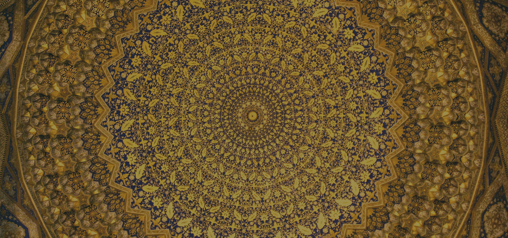

01
Empower Through Education
Expand access to modern skills, academic pathways, professional training, and learning resources.

Vatandosh Connect is an Uzbek-diaspora nonprofit dedicated to addressing social, cultural, economic, educational, and environmental needs in Uzbekistan through international partnerships and community engagement.
Our mission is to create meaningful connections between the Uzbek diaspora, international partners, and local communities to implement transformative projects with measurable and sustainable results.
Vatandosh Connect is recognized by the United States Internal Revenue Service as a tax-exempt 501(c)(3) charitable organization. Contributions from U.S. donors are tax-deductible to the extent permitted by law.
Legal status: 501(c)(3) nonprofit organization
EIN: 83-4433534
Based in: Chapel Hill, North Carolina
Serving: Communities and institutions across Uzbekistan
These objectives are migrated from the current site and sharpened for institutional readers, partners, and donors.
Expand access to modern skills, academic pathways, professional training, and learning resources.
Help communities outside major centers access partnerships, expertise, and practical project support.
Support more Uzbek students and professionals in pursuing higher education and global collaboration.
These principles help keep a broad portfolio coherent and credible.
We build collaborations grounded in service, excellence, and accountability.
We respect all individuals regardless of faith, ethnicity, gender, or background.
We create pathways for diaspora members to contribute expertise and resources to Uzbekistan's development.
The organization is led by people who combine diaspora commitment, institutional relationships, and field-level experience.

Founder and CEO
Founder and president of Vatandosh Connect, leading partnerships with institutions including UNC-Chapel Hill, Duke University, the University of Connecticut, and the Colorado School of Mines.

Board Member
Senior executive with more than 30 years of experience building information services organizations and improving operational performance through technology and partnerships.

Board Advisor
Director of the Republican Center for the Social Adaptation of Children in Uzbekistan, with more than 20 years of experience in child development and social protection.

Board Member
Licensed clinical social worker and psychotherapist based in Chapel Hill, with deep experience in mental health, addiction counseling, trauma, and family wellbeing.